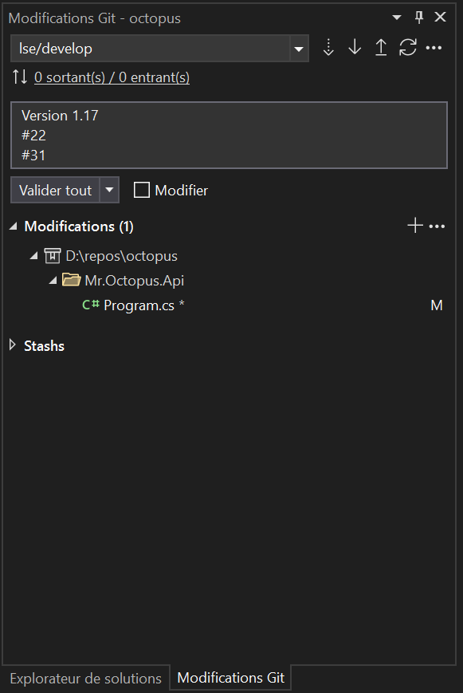
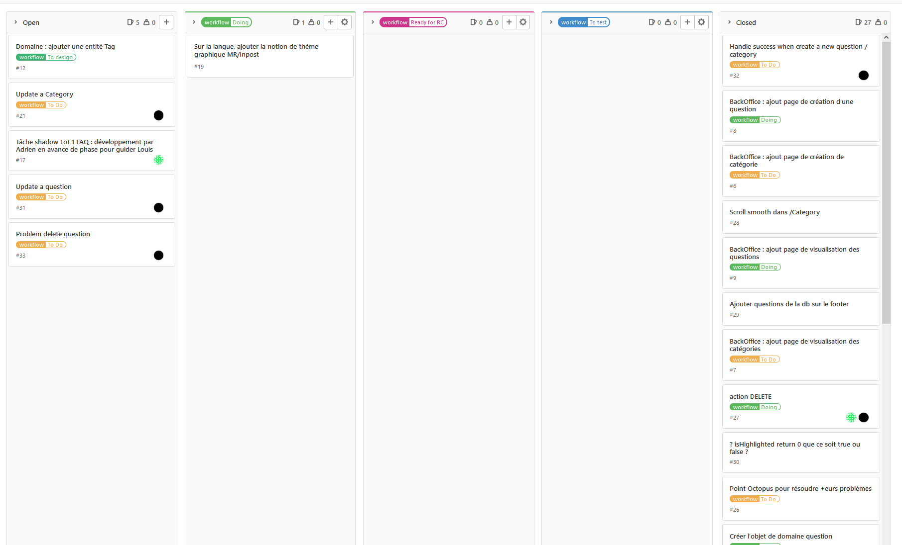

Behance
Gitlab
Louis Serrano
SIO Slam Alternance
Traiter des sauvegardes
«
Traiter des sauvegardes
▪ Gestion des versions de mon projet avec des sauvegardes Git. Push à chaque changement pour confirmer les changements et la gestion de bugs, mise en place de nouvelles fonctionnalités, rework de fonctionnalités, de design.
par exemple ici, envoi d'une nouvelle version pour avancement sur la tache #31 'update a question' et #21 'update a Category'
 
▪ Répertoire de tous les changement sur sourcetree qui permet de mieux s'y retrouver, voir tout ce qui a été changé sur telle ou telle version